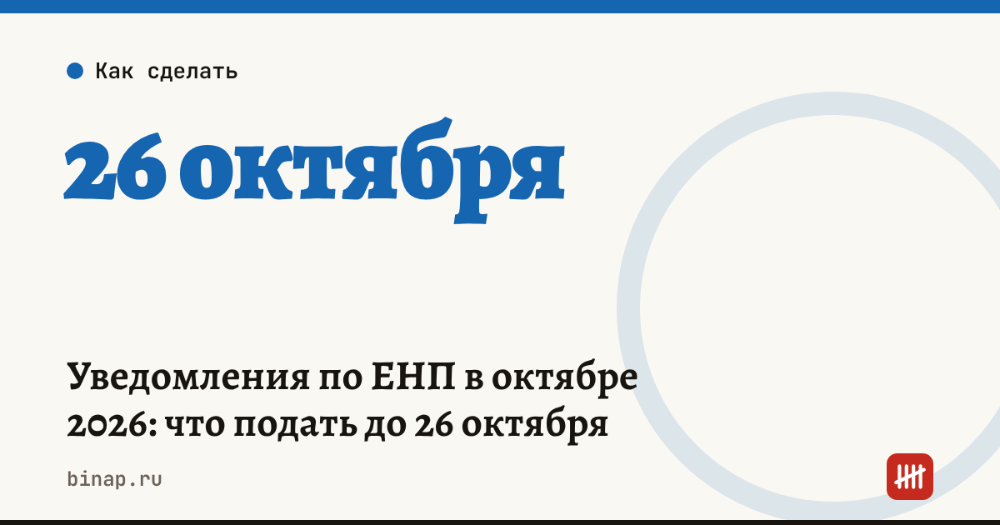

Уведомления по ЕНП: как подать и сроки до конца 2026 года

Уведомление об исчисленных налогах нужно, чтобы налоговая знала, в счёт какого налога списать деньги с единого налогового счёта. Его подают по налогам и взносам, срок уплаты которых наступает раньше срока декларации. В октябре 2026 года главным было уведомление по авансу УСН за 9 месяцев; ниже — что было в октябре, как подать уведомление и какие сроки остались до конца года.
Коротко
- Уведомление подают не позднее 25-го числа, деньги на ЕНС должны быть к 28-му; если дата выпадает на выходной — переносится на ближайший рабочий день.
- В октябре 2026 года 25-е выпало на воскресенье: уведомления подавали до 26 октября, платили до 28 октября.
- Если налог к уплате нулевой — уведомление не нужно.
- Штрафа за опоздание или ошибку в уведомлении нет, но без него деньги с ЕНС не распределятся, и начислят пени.
- В ноябре: уведомления по НДФЛ за 1–22 ноября и по взносам за октябрь — до 25 ноября, уплата — до 30 ноября (28-е — суббота).
Сроки, изменения и разборы для ИП и самозанятых — каждое утро в Telegram и MAX. Подпишитесь, чтобы не пропустить.
Сроки октября 2026 года
| Что | Уведомление | Уплата |
|---|---|---|
| Аванс по УСН за 9 месяцев | 26 октября | 28 октября |
| Аванс по НДФЛ ИП на ОСНО за 9 месяцев | 26 октября | 28 октября |
| Авансы по налогу на имущество организаций | 26 октября | 28 октября |
| НДФЛ с зарплаты, удержанный 1–22 октября | 26 октября | 28 октября |
| НДФЛ с зарплаты, удержанный 23–31 октября | 3 ноября | 5 ноября |
| Страховые взносы за сентябрь | не нужно | 28 октября |
По взносам за сентябрь уведомление не подавали: их срок совпадает со сроком расчёта по взносам.
Коды отчётного периода: НДФЛ за 1–22 октября — 34/01; аванс по УСН за 9 месяцев и имущественные налоги за III квартал — 34/03; НДФЛ за 23–31 октября — 34/11 (по разъяснению УФНС).
Как подать уведомление: пошагово
- Посчитайте сумму налога или аванса. ИП на УСН «доходы» без работников уменьшают аванс на уплаченные взносы — если он стал нулевым, уведомление не нужно. Как посчитать — в статье Сколько платит ИП на УСН 6% без сотрудников.
- Выберите способ: бухгалтерский сервис, личный кабинет налогоплательщика (для ИП) или оператор ЭДО. Можно подать и на бумаге, если вы не обязаны отчитываться электронно.
- Заполните строки: КПП (для организаций), КБК налога, ОКТМО, сумму, код отчётного периода и год.
- Отправьте не позже срока и сохраните квитанцию о приёме.
- Пополните ЕНС до срока уплаты и проверьте сальдо в личном кабинете через пару дней.
Ошибся в уведомлении? Подайте новое с теми же КБК, ОКТМО и периодом, но с правильной суммой. Ошибочные строки, заменённые новым уведомлением, налоговая не учитывает.
Сроки до конца 2026 года
| Что | Уведомление | Уплата |
|---|---|---|
| НДФЛ с зарплаты, удержанный 1–22 ноября | 25 ноября | 30 ноября |
| Страховые взносы за октябрь | 25 ноября | 30 ноября |
| НДФЛ с зарплаты, удержанный 23–30 ноября | 3 декабря | 7 декабря (5-е — суббота) |
| НДФЛ с зарплаты, удержанный 1–22 декабря | 25 декабря | 28 декабря |
| Страховые взносы за ноябрь | 25 декабря | 28 декабря |
| НДФЛ, удержанный 23–31 декабря | последний рабочий день года — сверьте с производственным календарём |
Если 5-е число выпадает на выходной, срок переносится на следующий рабочий день. Ближайшие сроки — всегда на главной странице сайта, а весь год — в налоговом календаре ИП на 2027 год.
Если ваш товар пострадал при атаках на склады. Для пострадавших от атак на объекты групп «РВБ» (Wildberries) и «Интернет Решения» (Ozon) сроки авансов по УСН и НДФЛ, которые приходятся на август 2026 — июль 2027 года, продлены на 12 месяцев (постановления правительства от 25.08.2026 № 1074 и от 30.09.2026 № 1277). Кто попадает под меры — в статье Склад WB или Ozon пострадал от атаки.
Частые вопросы
Нужно ли уведомление при нулевом авансе? Нет.
Есть ли штраф за неподачу? Нет, но если из-за этого налог не спишется вовремя, начислят пени.
Можно ли подать одно уведомление по нескольким налогам? Да, в одном уведомлении может быть несколько строк — по каждому налогу, КБК и ОКТМО отдельно.